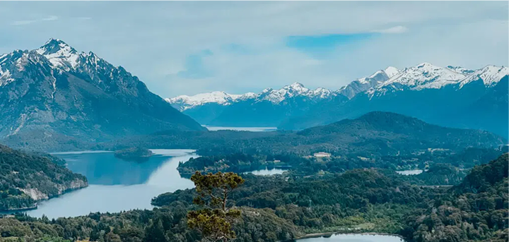
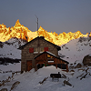
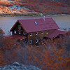
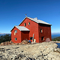
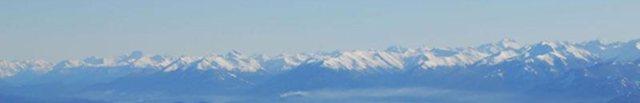
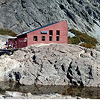
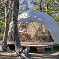
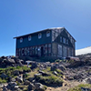

Guia de tekking
“Viví toda mi vida en Beriloche y si hay un lugar donde soy feliz es en la montaña”


Agujas de granito bordean una laguna cristalina, paraíso mundial de la escalada técnica.

Amplio valle rodeado de picos, ideal para caminantes que buscan lagunas de altura.

El balcón natural más espectacular con vistas panorámicas increíbles al Nahuel Huapi.


Custodiado por paredes de piedra oscura, ofrece una experiencia de montaña pura y salvaje.

Playas de arena frente al "Trono Blanco", con vistas directas al cerro Tronador.

Entre los glaciares Castaño Overo y Alerce, en el corazón del cerro Tronador.
“Viví toda mi vida en Beriloche y si hay un lugar donde soy feliz es en la montaña”